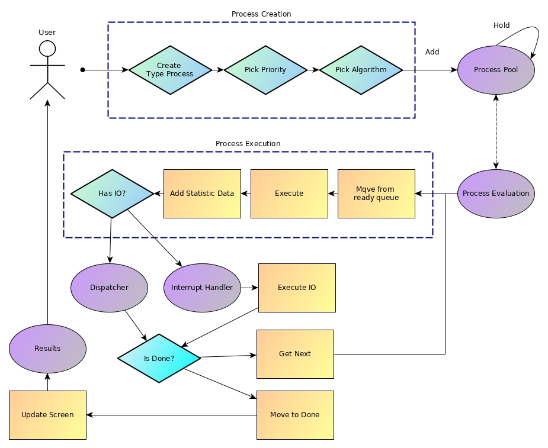
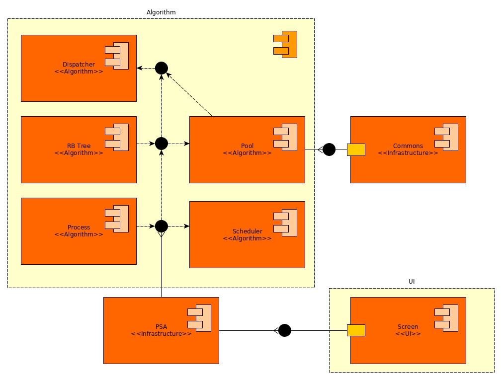
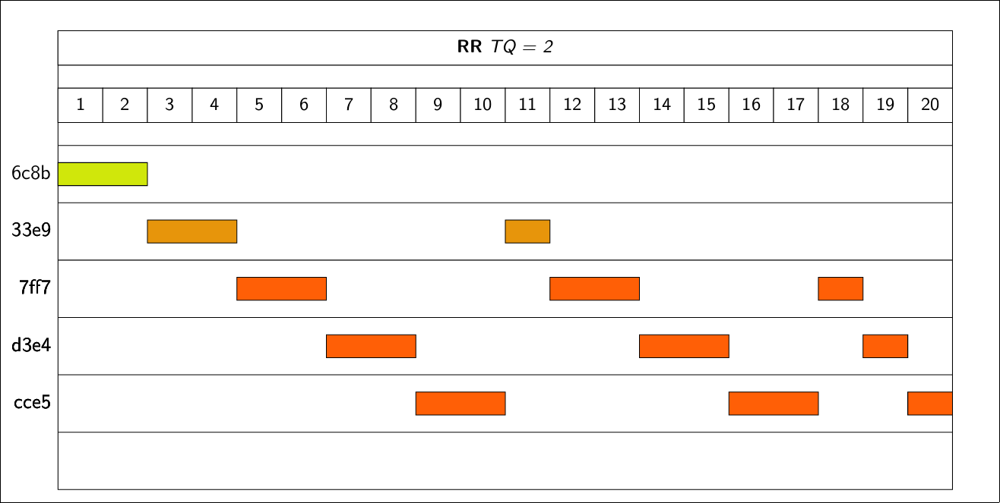
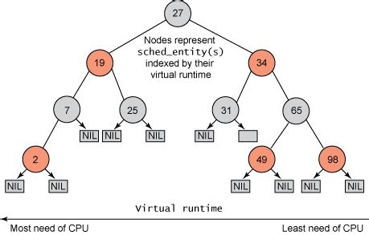

COS Senior Project
Martin Nestorov
Created: 2019-04-30 Tue 08:44
Analysis of process-scheduling algorithms
comparison and contrast
The purpose of this project is to analyze and compare these different algorithms, to show their strengths and weaknesses.
Specification and Analysis
I've set out a few goals with this
I want this project to be:
From a functional standpoint
- Simple interface
- Be responsive to all inputs
- Graphs for each algorithm performance
- Be robust!
And speaking non-functionally
- Fast and light
- Must have high code quality
- Be easy to build and port
Pipeline of Software

Architecture of Software
MVC

Implementation and Technologies


Types of Scheduling Algorithms
- First Come First Serve
- Shortest Job First V1
- Shortest Job First V2
- Round Robbin
- Priority Job First
- Completely Fair Scheduler
System Types can be either Interactive, Real-Time, and Batch, with sub-types being preemptive or non-preemptive.
A Word about processes
Processes need to be simulated, thus their work is to sleep and be scheduled. We take it as a given that the processes will be normally distributed over a time range.

Shortest Job First V2
- Uses predictions to estimate next burst
- More optimal than FCFS
- Not applicable to real world
Exponential Average Calculation

Round Robin
- Used on preemptive systems
- Optimal
- Allows for more fair distribution of execution
- Used in modern systems

Completely Fair Scheduler
- Used as the Linux Scheduler
- Implemented via Red-Black Tree
- Based on the idea of fair distribution of processes
- Optimal
Red-Black Tree Structure
A Red-Black Tree is a kind of self-balancing binary search tree. Each node of the binary tree has an extra bit, often interpreted as the color of the node. These color bits are used to ensure the tree remains approximately balanced during insertions and deletions.
- Insertion O(log n)
- Deletion O(log n)
- Balancing O(1)


Procedure of CFS
When the scheduler is invoked to run a new process, the operation of the scheduler is as follows:
- The leftmost node of the scheduling tree is chosen (as it will have the lowest spent execution time), and sent for execution.
- If the process completes execution, remove it.
- If the process reaches its maximum execution time or is otherwise stopped (voluntarily or via interrupt) it is reinserted into the scheduling tree based on its new spent execution time.
- The new leftmost node will then be selected from the tree, repeating the iteration.